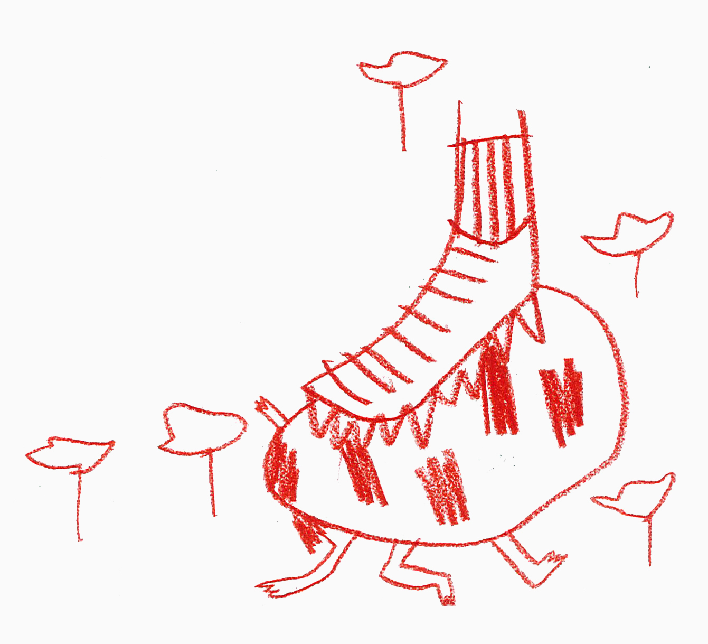

La cour de récréation, en tant que microcosme est un lieu ou se révèle de façon particulièrement nette les rapports de domination entre les filles et les garçons dans le sens ou la cour de récréation est un lieu de construction des identifications sexuées.
Une utilisation de l’espace genrée et inégalitaire
Dans la cour, les garçons se distinguent des filles par leur mobilité. Leur jeux sont plus souvent désorganisés, peu réglementés. Ces jeux font plutôt appel à l’agilité, l’habileté, la compétition physique. Ils sont liés au mouvement, à la bagarre, au combat. Le défi et la compétition y sont valorisés.
Les garçons occupent majoritairement l’espace et en particulier le centre de la cour (terrain de football).
Bande annonce de Récréations, réalisé par Claire Simon.
Au contraire, les filles se contentent d'un usage limité de l’espace, elles sont situées le plus souvent à la périphérie de la cour et se réunissent en couple ou en trio. Elles bougent peu et se déplacent moins.
Elles se consacrent davantage à des jeux de situation, la famille, la maîtresse. En effet, les filles mettent en scène des scénarios de la vie quotidienne qui touchent le domaine familial et domestique.
Leurs jeux sont plus souvent marqués par la suprématie des règles : corde à sauter, élastique.
Les filles en particulier de 9 à 10 ans privilégient les discussions, à deux ou en petits comités, dans un lieu d’intimité.
la cour de récré, lieu de confrontation
Mais si la cours est un lieu fortement marqué par l’évitement, c’est aussi un lieu de confrontation des genres. Sophie Ruel parle de «violation» de territoire dans le sens ou l’occupation spatiale de la cour participe à l’élaboration d’une identité de groupe. En même temps qu’ils s’approprient collectivement les lieux, les enfants acquièrent la conscience d’appartenir à un groupe : ils.elles sont filles ou garçons.

De ce fait, l’appropriation par des filles de l’espace à priori reservé aux garçons est source de conflit. Au-delà de cette violation territoriale, c’est l’identité masculine collective qui est offensée : la réalité spatiale se présente donc comme le fruit d’un jeu de forces. Les garçons se montrent sensibles au respect de leur territoire et portent peu d’égard à l’espace de jeux des filles. Par exemple, alors que l'investissement par les filles du terrain de foot peut représenter un véritable problème, les garçons n'ont aucuns soucis à traverser en courant leurs jeux d’élastiques.
Dans une anecdote que nous raconte le sociologue Kevin Diter, les garçons vont jusqu’à manifester contre les jeux des filles.